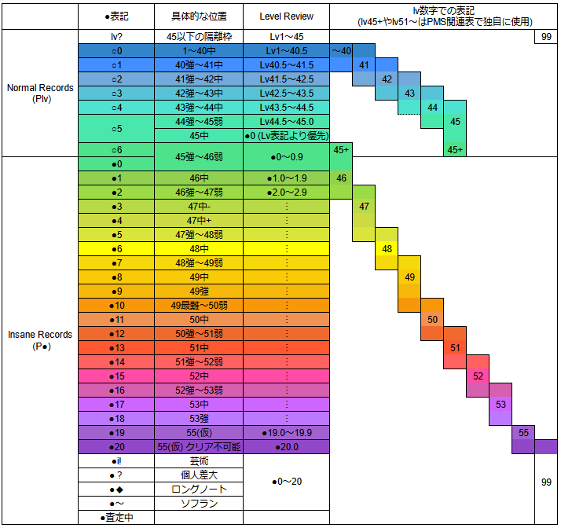

BOF:NT(BOF2023) PMS差分企画のポータル & 難易度表です。このページのURLは難易度表ツールに対応しており、シンボルとして【BOFNTPlv】を使用しています。
(2024/05/30) データベース本表への統合を行いました。ご協力ありがとうございました！
■ 収録総数: Vol.1(60) + Vol.2(60) + Vol.3(73) = 193譜面 イベント同梱譜面(208) + 差分企画(193) = 計401譜面 (157曲)
■ BOF:NT PMS差分企画ワークシート跡地 (Work Sheet Here - Google Spreadsheets)
■ P●数字版難易度表
■ BOF:NT イベント会場 (BOF:NT Venue)
■ BOF:NT 同梱譜面一覧表 (全てのプレイスタイルの譜面を含むリストです。パッケージ準拠)
初めての方はこちら。下記 "導入方法について" を参照しながら作業してください。
【Download】BOF:NT BMS Package (本体BMSパッケージ)
【Download】BOF:NT PMS Appends Full Package (Team sort) (2024/05/09 ver.) Mirror:
(Full)
(Vol.1)
(Vol.2)
(Vol.3)
【Download】BOF:NT PMS Appends Full Package (Title sort) (2024/05/09 ver.) Mirror:
(Full)
(Vol.1)
(Vol.2)
(Vol.3)
- 2024/04/01 22:30 以前にダウンロードされた方 収録漏れファイルの修正パッチ
- 2024/05/09 22:00 以前にダウンロードされた方 Lv52 Volanphantasia の修正譜面 (いずれも、最新版パッケージには既に適用済です)
1) BOF:NT BMS Package (本体BMSパッケージ) をダウンロードし、7-zip 等を利用して解凍します。
2) BOF:NT PMS Appends Full Package (Team sort) をダウンロードし、(1) にフォルダごと統合してください。上書きを確認された場合は「全て上書き」で大丈夫です。
3) 高画質BGAパッケージ (beatoraja 向け) 導入は任意です。*LR2 ユーザーの方は導入しないでください。
上記以外のパッケージを使用されている方、楽曲を個別に収集された方、導入がうまくいかない場合は手動で導入してください。
各曲の差分リンク または BOF:NT PMS Appends Full Package (Title sort) から差分をダウンロードし、GLAssist /
BeMusicSeeker の差分自動導入機能を利用すると効率的です。
パッケージ作成ミスの可能性がありますので、PMS Database 関連作業所「ミスなどの報告」 または Discord #差分企画 チャンネルでお気軽にご相談ください。
・締切は (Vol.1) 2023/11/26 、(Vol.2) 2024/01/31 (Vol.F) 2024/03/31 です。
・宣言リストに「連絡先について」の記入欄を追加しました。※任意記入
・2023/07 PMS Database の改訂 に伴い、難易度査定欄を beatoraja / その他 でレイアウト変更しました。
・その他のルールは昨年と同様です。
Summary for already know this event：
・Deadlines: (Vol.1) 26/11/2023 (Vol.2) 31/01/2024 (Vol.F) 31/03/2024
・Added "Contact Information" column in the Declaration List's spreadsheet. *optional / for personal
・In accordance with new guideline of the 2023/07, "Difficulty Assessment" column subdivided.
・Otherwise are basically same as the previous year.
・エントリー対象は BOF:NT 登録作品の PMS / BMSON(PMSON) 差分です。
・BMS作者さんが禁止しない限り、自由に差分制作して頂いて構いません。曲変更・音ズレ・無音ノート等も各自の裁量にお任せします。
・BMS作者さんに対するモラルに欠いた内容や (対象を問わず) 誹謗中傷など、公序良俗に反する差分の投稿はご遠慮ください。テンプレートのベタ貼り に類するものや譜面生成ツールも勘弁してね。
・エントリーされた差分が、当サイトおよび第三者によって再配布される可能性について、また PMS Database 各表へ登録されることについてご同意ください。
Vol.1 : 2023/11/26(Sun) // 46 Days (= Impression Period)
Vol.2 : 2024/01/31(Wed) // 66 Days
Vol.F : 2024/03/31(Fri) // 60 Days
下記(1)～(4)のいずれかでお願いします。
受け取ったら「json &難易度査定」シートに情報を記入し、ワークシート下部の「受け取り済みリスト」を更新します。ミスがないか、譜面数が正しいか確認してください。
(1) 差分企画ワークシート「宣言リスト」の右側にある提出欄にダウンロードリンクを貼って提出
(2) X(Twitter): ＠pmsdatabase へのリプライ/DM
(3) Discord: PMS Database Discord Server (#bof差分企画) (PMS Database#1377 への個人チャットは使用しないでください)
(4) Mail: pvideocomplement@gmail.com (お返事が遅れる場合があります)
・差分企画開催期間中はダウンロードリンクを残しておいてください。
・X(Twitter)/メール で投稿される場合「オート動画の代理投稿」「BGA/IR登録化/文字化け等の代理修正」(後述) の可否を教えてください。言及がなければ運営側で判断します。
・差分はまとめて送付頂いても1件ずつでも構いません。複数曲の差分を1フォルダにまとめても大丈夫です。
・追加音源やテキストファイルを同梱したい場合は個別に連絡をお願いします。
・代理投稿、匿名(偽名)投稿も可能です。
■ Home
トップシート(建前) 主にミス報告や質問を受け付けます。他にはBOFの関連情報や有益な情報をメモしていく予定です。
■ 宣言&受け取り済みリスト
このシートで差分制作を宣言・提出したり、他の差分作者さんの進捗を確認することができます。バックアップを取っていますのでお気軽に編集してください。
早い者勝ちではありませんので、曲やレベルが重複しても遠慮なく宣言して頂いて構いません。もちろん宣言なしの飛び入り参加も大歓迎です。
・「難易度・譜面数について」… 作る予定の難易度や下位譜面の有無について教えてください。目途が立ち次第、追記する形でも大丈夫です。
・「オート動画の代理投稿」… 後日 YouTubeチャンネル にオート動画を投稿予定です。投稿して欲しくない場合はNG、自分で上げる場合はその旨を記入してください。
・「BGA/IR登録化/文字化け等の代理修正」… 差分提出後の本体BMSの修正や細かいミスについて、運営側の判断で対応して良いかの確認です。IRが分裂するので要注意。
・「連絡先について」… 差分制作者さん同士で個人的なやり取りをするための個人的な連絡先を想定しています。(Mail / SNS など) ※任意記入 運営は基本的に使用しません。
差分を受け取ったらシート下部「受け取り済みリスト」に移動し、各種情報を記入しますのでご確認ください。
各種情報に不備があった場合、提出後の差分を修正した場合は「修正報告欄」に日付を含めて記入してください。
■ json &難易度査定
このシートを使って、主に難易度査定を行います。シートの中央にあるカラフルな「難易度査定欄」を1人1列ずつ利用して、難易度や感想を書いていきましょう。
beatoraja と その他環境 (LR2/KB/アナコン等を含む) で記入欄を分離しています。適切な記入欄を選択してください。
差分企画終了後、意見を参考にしつつ PMS Database の本表へ反映を行います。査定へのご協力をよろしくお願いします。
■ 全曲リスト&リクエスト
全登録曲の一覧と、宣言中・PMS差分公開中の楽曲を確認できます。加筆やフィルタの利用はご自由にどうぞ。リクエスト歓迎！ 行を赤色に塗り分けて仕分けしています。
■ Testplay / Lounge
それぞれ自由にご利用ください。
・(共同アップローダ等でなく) ワークシートにて提出された譜面の先行・テストプレイを行う際は、IR-OFF にご協力お願いします。
・エントリーされた差分の個別公開、別の企画への流用についての制限はありません。差分を修正された場合はご連絡ください。
・早い時期に制作宣言された差分が最後まで提出されない事例が毎年起こりますので、制作を断念された際は宣言シートを更新して頂けると非常に助かります。
・上記に関係して、Vol.2 公開時点で提出の見通しが立たず、かつ連絡の取れない宣言内容については運営の判断で取り消させて頂く場合があります。
・平等性の観点から、イベントの評価期間中は難易度変更やリストからの撤回要請に対応できません。Vol.1 公開以降は対応しますので、前もって連絡頂くのは問題ありません。
・ご不明な点はお気軽にお問い合わせください！
■ Guide - PMS導入ガイド (2023年版) - PMS Database … 当サイトの解説記事です。下記の記事群などを参考にしつつ、特に重要と思われる情報を集約しました。
■ 創作譜面 (自作差分) の作成 - PMS Database
■ 発狂PMS導入ガイド … LR2 / beatoraja 向け
■ 発狂PMS導入方法 完全版（beatoraja） … beatoraja 向け
■ Beatoraja English Guide
■ 差分作成のアレコレ (西ヶ蜂さん)
■ 【BMS】uBMSC簡易トラブルシューティング（発狂PMS勢向け）
■ PMS差分制作ツール三銃士
・pBMSC … 多機能な PMSエディタです。いくつかの派生エディタがありますが、pBMSC は PMS向けの独自機能が充実しています。
・mBMplay … プレビュー再生向けの BMS/PMSプレイヤー。pBMSCと連携してその場再生が可能です。
・PMS譜面ミスチェッカー … 無理押し、未使用レーン配置などPMS譜面特有のミスはこれで解決！ (2022/01/22 アップデートがありました。適用よろしくお願いします。)
■ BMSChecker … 定義エラーやファイルの欠損など、BMSの一般的なエラーを検出する総合ツールです。
■ Anzu BMS Diff Tool … 複数の差分間での配置ズレや音抜けを検出するツールです。
■ BMS to BGM Converter … 全てのオブジェクトをBGMレーンに再配置するツールです。テンプレートファイルが同梱されていないBMSに便利な場合も。
(注意) pBMSC の設定「BGM列の数」(右側オプションパネル > Gridタブ > Expandタブ クリック) の設定値が小さいと音抜けしてしまう可能性がありますので確認して下さい。
■ 本家っぽいTOTAL値の調整方法の参考記事 (misty.ls04さん)
■ LR2/beatoraja 対応 TOTAL値計算シート (サンゴ三号さん)
・beatoraja を使用した査定意見を優先します。
・LR2, QMS-player, Qwilight, Bemuse 等 (以下、第三本体) からの意見は、beatoraja からの査定が少ない場合、意見が二分されている場合のみ判断材料に加えます。
・beatoraja 固有の拡張定義が使用されている場合、TOTAL値未定義など本体プレイヤーの仕様に依存している場合は、beatoraja からの査定のみで判断をします。
・第三本体特有の仕様やバグが意図的に使用されていて beatoraja での難易度が大きく変わってしまう場合は、beatoraja の査定に関わらず総合的に評価します。
・beatoraja 環境下で「Gauge Auto Shift (GAS) を BEST CLEAR に設定し、下限を NORMAL としたときにクリアランプがつく難易度」を、その譜面の難易度とします。
・第三本体からプレイする場合は「NORMAL または HARD ゲージで簡単な方でのクリア難易度」をその譜面の難易度とします。
・AC準拠のボタンサイズでの難易度を基準とします。ポプコン、アナコン、KBでの査定が不可というわけではありませんが、配慮をお願いします。
・正規、ミラー譜面でのプレイを基本とします。(ただし、RAN/S-RAN で明らかに数レベル易しくなる場合は個人差フォルダに送られる場合があります)
・beatoraja のソフラン対策オプション SUD+ 使用と位置変更 / HS 変更 / HI-SPEED固定自動調整 (皿チョン) は全て使用可 とします。
・#LNMODE 定義の制限がない譜面では、beatoraja のLNモードは "LN" を使用した場合を基準とします。
・第三本体でも、これらに該当するオプションがある場合は同様に使用可とします。
差分企画向けの追加説明
・差分企画内の難易度表では、本家同様に 50(+α) 段階の表記難易度で振り分けます。
・レベル1～49 は本家基準、レベル55は極めて難しい譜面、レベル99は 個人差(P●？) ロングノート(◆) ソフラン(～) の隔離フォルダです。
・？◆～要素を含めば必ずレベル99に登録されるという事ではありません。隔離フォルダ狙いの意図がなければ通常難易度での設定をオススメします。
・難易度表を使ってレベル調整を行うため、表記難易度は大雑把で大丈夫です。それでも気になる場合はテストプレイシートのご利用を。
・"Dummy" という表記の難易度フォルダが現れる場合がありますが、無視して頂いて問題ありません。
